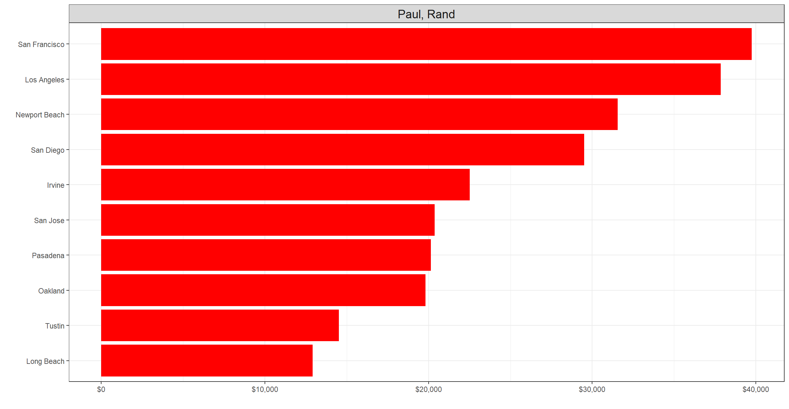

Top ten candidates
Now, the fun part - let’s plot bar charts that can show clearly the top ten cities in which the candidates raised capital for their electoral campaigns.
Naturally: * Democrats will be represented in blue * Republicans will be displayed in red
1) Clinton, Hillary Rodham
The 2016 presidential campaign of Hillary Clinton was announced in a YouTube video, on April 12, 2015. Hillary Clinton was the 67th United States Secretary of State and served during the first term of the Obama administration, 2009 to 2013. She was previously a United States Senator from New York, 2001 to 2009, and is the wife of former President Bill Clinton, serving as First Lady of the United States from 1993 to 2001.
Clinton’s main competitor in the 2016 Democratic primary election was Vermont Senator Bernie Sanders. She received the most support from middle aged and older voters, and from black, Latino, and older female voters. She focused her platform on several issues, including expanding racial, LGBT, and women’s rights, raising wages and ensuring equal pay for women, and improving healthcare.
Clinton conceded the 2016 presidential election to Republican Donald Trump on November 9 after media outlets declared Trump had exceeded the 270 electoral college vote threshold needed to win the election and ending the campaign.
Clinton <- my_CA_2016 %>% filter(cand_nm == "Clinton, Hillary Rodham") %>% group_by(primary_city) %>% summarise(tot_cont = sum(contb_receipt_amt)) %>% arrange(desc(tot_cont))
p_clinton <- ggplot(Clinton[1:10,], aes(x = tot_cont, y = reorder(primary_city, tot_cont))) + geom_bar(stat="identity", fill="blue") + scale_x_continuous(labels=scales::dollar_format()) + labs(x="", y="") + theme_bw() + theme(plot.title = element_text(hjust = 0.5)) + facet_wrap(~"Clinton, Hillary Rodham")+ theme(strip.text =element_text(size=14))
p_clinton
2) Sanders, Bernard
Sanders’s chief competitor for the nomination was Hillary Clinton, a former secretary of state. Sanders drew large crowds to his speaking events and his populist and social democratic politics won him particular support among Americans under 40. He performed strongly with white voters, but consistently trailed Clinton by 30 or more percentage points among black voters; polls showed a close race among Hispanic voters.
Sanders focused on income and wealth inequality, which he argued is eroding the American middle class, and on campaign finance reform. Unlike most other major presidential candidates, Sanders eschewed an unlimited super PAC, instead choosing to receive most of his funding from direct individual campaign donations.In September 2015, The New York Times reported that the campaign had received one million individual donations, becoming the first in 2015 to reach that threshold. Sanders raised $20,000,000 in the month of January 2016, $5,000,000 more than Clinton during the same time period, with an average donation of $27. Sanders frequently mentioned this $27 figure on the campaign trail as proof of his grassroots support.
Following the final primary election (the District of Columbia’s, on June 14), Clinton became the presumptive Democratic nominee. Sanders did then endorse Clinton, and said he would work with her to defeat the presumptive Republican nominee, Donald Trump.
Sanders <- my_CA_2016 %>% filter(cand_nm == "Sanders, Bernard") %>% group_by(primary_city) %>% summarise(tot_cont = sum(contb_receipt_amt)) %>% arrange(desc(tot_cont))
p_sanders <- ggplot(Sanders[1:10,], aes(x = tot_cont, y = reorder(primary_city, tot_cont))) + geom_bar(stat="identity", fill="blue") + scale_x_continuous(labels=scales::dollar_format()) + labs(x = "", y = "") + theme_bw() + theme(plot.title = element_text(hjust = 0.5)) + facet_wrap(~"Sanders, Bernard")+ theme(strip.text =element_text(size=14))
p_sanders
3) Trump, Donald J.
The 2016 presidential campaign of Donald Trump was formally launched on June 16, 2015, at Trump Tower in New York City. Trump was the Republican nominee for President of the United States in the 2016 election, having won the most state primaries, caucuses, and delegates at the 2016 Republican National Convention. He chose Mike Pence, the sitting Governor of Indiana, as his vice presidential running mate. On November 8, 2016, Trump and Pence were elected president and vice president of the United States. Trump’s populist positions in opposition to illegal immigration and various trade agreements, such as the Trans-Pacific Partnership, earned him support especially among voters who were male, white, blue-collar, working class, and those without college degrees.
Trump <- my_CA_2016 %>% filter(cand_nm == "Trump, Donald J.") %>% group_by(primary_city) %>% summarise(tot_cont = sum(contb_receipt_amt)) %>% arrange(desc(tot_cont))
p_trump <- ggplot(Trump[1:10,], aes(x = tot_cont, y = reorder(primary_city, tot_cont))) + geom_bar(stat="identity", fill="red") + scale_x_continuous(labels=scales::dollar_format()) + labs(x="", y="") + theme_bw() + theme(plot.title = element_text(hjust = 0.5)) + facet_wrap(~"Trump, Donald J.")+ theme(strip.text =element_text(size=14))
p_trump
4) Cruz, Rafael Edward ‘Ted’
The 2016 presidential campaign of Ted Cruz, the junior United States Senator from Texas, was announced on March 23, 2015. He was a candidate for the Republican Party’s 2016 presidential nomination and won the second-most state contests and delegates. Cruz themed his campaign around being an outsider and a strict conservative. In the crowded early field, he chose not to directly confront the leading candidate, Donald Trump, who was also viewed as an outsider candidate. His cordial and sympathetic tone towards Trump contrasted with the more critical approach of rivals such as Jeb Bush, Marco Rubio, and Rand Paul. Had Cruz been elected, he would have been the first Cuban American U.S. president and the first U.S. president born outside of the United States or the Thirteen Colonies.
Cruz <- my_CA_2016 %>% filter(cand_nm == "Cruz, Rafael Edward 'Ted'") %>% group_by(primary_city) %>% summarise(tot_cont = sum(contb_receipt_amt)) %>% arrange(desc(tot_cont))
p_cruz <- ggplot(Cruz[1:10,], aes(x = tot_cont, y = reorder(primary_city, tot_cont))) + geom_bar(stat="identity", fill="red") + scale_x_continuous(labels=scales::dollar_format()) + labs(x="", y="") + theme_bw() + theme(plot.title = element_text(hjust = 0.5)) + facet_wrap(~"Cruz, Rafael Edward 'Ted'")+ theme(strip.text =element_text(size=14))
p_cruz5) Rubio, Marco
The 2016 presidential campaign of Marco Rubio, who is currently the senior United States senator from Florida, was formally announced on April 13, 2015, at an event at the Freedom Tower in Downtown Miami. Early polling showed Rubio, who was considered a potential candidate for Vice President by Republican presidential nominee Mitt Romney in 2012, as a frontrunner candidate for the Republican nomination for president of the United States in 2016 since at least the end of the 2012 election. Rubio was the second Cuban American to run for president of the United States, with Republican Ted Cruz announcing his campaign three weeks earlier. He suspended his campaign on March 15, 2016, after finishing second in Florida’s primary.
Rubio <- my_CA_2016 %>% filter(cand_nm == "Rubio, Marco") %>% group_by(primary_city) %>% summarise(tot_cont = sum(contb_receipt_amt)) %>% arrange(desc(tot_cont))
p_rubio <- ggplot(Clinton[1:10,], aes(x = tot_cont, y = reorder(primary_city, tot_cont))) + geom_bar(stat="identity", fill="red") + scale_x_continuous(labels=scales::dollar_format()) + labs(x="", y="") + theme_bw() + theme(plot.title = element_text(hjust = 0.5)) + facet_wrap(~"Rubio, Marco")+ theme(strip.text =element_text(size=14))
p_rubio
6) Bush, Jeb
The 2016 presidential campaign of Jeb Bush, the 43rd Governor of Florida, was formally launched on June 15, 2015, coming six months after announcing the formal exploration of a candidacy for the 2016 Republican nomination for the President of the United States on December 16, 2014, and the formation of the Right to Rise PAC. On February 20, 2016, Bush announced his intention to drop out of the presidential race following the South Carolina primary. Had Bush been elected, he would have been the first president from Florida and the first sibling of a U.S. president (George W. Bush) to win the presidency himself.
Bush <- my_CA_2016 %>% filter(cand_nm == "Bush, Jeb") %>% group_by(primary_city) %>% summarise(tot_cont = sum(contb_receipt_amt)) %>% arrange(desc(tot_cont))
p_bush <- ggplot(Clinton[1:10,], aes(x = tot_cont, y = reorder(primary_city, tot_cont))) + geom_bar(stat="identity", fill="red") + scale_x_continuous(labels=scales::dollar_format()) + labs(x="", y="") + theme_bw() + theme(plot.title = element_text(hjust = 0.5)) + facet_wrap(~"Bush, Jeb") + theme(strip.text =element_text(size=14))
p_bush7) Carson, Benjamin S.
The 2016 presidential campaign of Ben Carson, a pediatric neurosurgeon and bestselling author, was announced May 3, 2015, in an interview with a local television station in Cincinnati, Ohio. He formally announced his candidacy for the Republican nomination in the 2016 presidential election at a rally in his hometown of Detroit on May 4, 2015. On March 4, 2016, Carson officially ended his campaign in a speech at CPAC. He endorsed Donald Trump on March 11.After Trump won the general election, he selected Carson to be his Secretary of Housing and Urban Development, with Carson announcing an additional administration role overseeing the repeal and replacement of the Patient Protection and Affordable Care Act.
Carson <- my_CA_2016 %>% filter(cand_nm == "Carson, Benjamin S.") %>% group_by(primary_city) %>% summarise(tot_cont = sum(contb_receipt_amt)) %>% arrange(desc(tot_cont))
p_carson <- ggplot(Clinton[1:10,], aes(x = tot_cont, y = reorder(primary_city, tot_cont))) + geom_bar(stat="identity", fill="red") + scale_x_continuous(labels=scales::dollar_format()) + labs(x="", y="") + theme_bw() + theme(plot.title = element_text(hjust = 0.5)) + facet_wrap(~"Carson, Benjamin S.")+ theme(strip.text =element_text(size=14))
p_carson
8) Kasich, John R.
The 2016 presidential campaign of John Kasich, the 69th Governor of Ohio, was announced on July 21, 2015. He was a candidate for the 2016 Republican Party presidential nomination. He earned 154 delegates and won only one contest, his home state, Ohio. Kasich suspended his campaign on May 4, 2016, one day after becoming the last major challenger to Donald Trump for the nomination. Kasich vied to become the first Pennsylvania native to hold the office since James Buchanan in 1856, as well as the first from the city of Pittsburgh to do so.
Kasich <- my_CA_2016 %>% filter(cand_nm == "Kasich, John R.") %>% group_by(primary_city) %>% summarise(tot_cont = sum(contb_receipt_amt)) %>% arrange(desc(tot_cont))
p_kasich <- ggplot(Kasich[1:10,], aes(x = tot_cont, y = reorder(primary_city, tot_cont))) + geom_bar(stat="identity", fill="red") + scale_x_continuous(labels=scales::dollar_format()) + labs(x="", y="") + theme_bw() + theme(plot.title = element_text(hjust = 0.5)) + facet_wrap(~"Kasich, John R.")+ theme(strip.text =element_text(size=14))
p_kasich9) Fiorina, Carly
The 2016 presidential campaign of Carly Fiorina was announced in a video message posted on May 4, 2015. Fiorina was formerly chief executive officer of the technology company Hewlett-Packard, and was the Republican nominee for U.S. Senate in California in 2010.
Fiorina suspended her campaign for the Republican presidential nomination on February 10, 2016. On April 27, 2016, Ted Cruz announced that Fiorina would be his running mate should he win the nomination. She joined his campaign days before the Indiana Primary, which he lost. Cruz suspended his campaign that evening, effectively ending Fiorina’s vice-presidential bid.
Fiorina <- my_CA_2016 %>% filter(cand_nm == "Fiorina, Carly") %>% group_by(primary_city) %>% summarise(tot_cont = sum(contb_receipt_amt)) %>% arrange(desc(tot_cont))
p_fiorina <- ggplot(Clinton[1:10,], aes(x = tot_cont, y = reorder(primary_city, tot_cont))) + geom_bar(stat="identity", fill= "red") + scale_x_continuous(labels=scales::dollar_format()) + labs(x="", y="") + theme_bw() + theme(plot.title = element_text(hjust = 0.5)) + facet_wrap(~"Fiorina, Carly")+ theme(strip.text =element_text(size=14))
p_fiorina
10) Paul, Rand
The 2016 presidential campaign of Rand Paul, the junior United States Senator from Kentucky, was announced on April 7, 2015 at an event at the Galt House in Louisville, Kentucky. First elected to the U.S. Senate in the 2010 election, Paul’s candidacy for the Republican nomination for President of the United States in 2016 had been widely speculated since early 2013.
Paul suspended his campaign on February 3, 2016.
Paul <- my_CA_2016 %>% filter(cand_nm == "Paul, Rand") %>% group_by(primary_city) %>% summarise(tot_cont = sum(contb_receipt_amt)) %>% arrange(desc(tot_cont))
p_paul <- ggplot(Paul[1:10,], aes(x = tot_cont, y = reorder(primary_city, tot_cont))) + geom_bar(stat="identity", fill="red") + scale_x_continuous(labels=scales::dollar_format()) + labs(x="", y="") + theme_bw() + theme(plot.title = element_text(hjust = 0.5)) + facet_wrap(~"Paul, Rand") + theme(strip.text =element_text(size=14))
p_paul